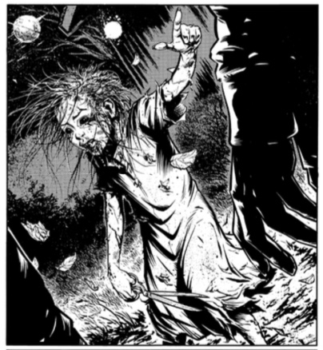

Mylingar
Myten om mylingar har funnits ända in på tidigt 1900 tal vilket man dels ser via författare från den tiden men också historier som berättas från områden som liknar hur det såg ut i Sverige runt slutet av 1800 talet och i början av 1900 talet. Mylingen är en myt som handlar om barnamördande och oönskade graviditeter och har därför funnits kvar längre än de flesta myter som har funnits i Sverige eftersom abort inte blev lagligt förrän 1938 vilket ledde till att många barn blev dödade efter födseln.
Myten om mylingen tros ha uppkommit under den tid som kyrkan hade mest makt. För det var nämligen då kyrkan inte ville att barn föddes från ogifta mödrar och man kunde inte göra abort. Detta ledde till att kvinnor dödade sina barn direkt efter födseln innan de döptes och begravde dom i trädgården eller under golvet i huset. Ifall det kom ut att mödrarna hade barn så kunde de bli straffade genom bannlysning eller bli kallade kättare. Ofta hände båda de här sakerna. Men ibland hände det att de blev kallade kättare även fast de fortfarande var med i kyrkan eller att de blev bannlysta utan att bli kallade kättare.
Mylingar var de varelser som skapats efter att barnet har blivit dödat och legat begravt under golvet eller ute i trädgården. Mylingar ser ut som små barn som går runt med en rostig sax i handen. Det finns illustrationer där en myling framkallar näsdukar ur sina offers luftstrupar. Det hände att mylingen sprang runt i natten och hoppade på ryggarna på ensamma vandrare och krävde att bli burna till en kyrkogård så de kunde vila på helig mark. Som en reaktion så blev mylingen tyngre ju närmre och närmre man kom till kyrkogården. Det kunde bli så pass tungt så bäraren kunde börja sjunka ner i jorden. Ifall bäraren inte kunde bära mylingen hela vägen så blev mylingen vansinnig och dödade bäraren med saxen som fanns i graven. Offret måste inte vara den som mördade mylingen då denne var ett barn. Det kan också vara den som är ute och går ensam på kvällen eller de som bor i huset där barnets mamma bodde . Man kunde höra barnen skrika, gråta, snyfta eller sjunga ifall de var i närheten. Ibland kunde de vara synliga och då var de i samma ålder som dom hade haft ifall de hade fått leva.
Man begravde ofta barnen med en sax för att undvika att barnen blev till mylingar. För att bli av med en myling så behövde man flytta kroppen till helig mark eller vigd jord. Därför har man hittat barnkroppar i kyrkomurar runt om i hela Sverige. Mödrarna hoppades att barnen skulle komma till himlen.
Myten om mylingen försvann när man började tillät aborter i Sverige. vilket ledde till att rädslan för mylingar försvann. Då fanns ingen som behövde gå igenom barna- mördande vilket ledde till att inga mylingar skapades.